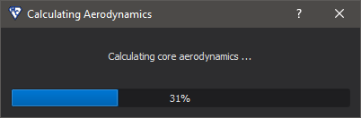
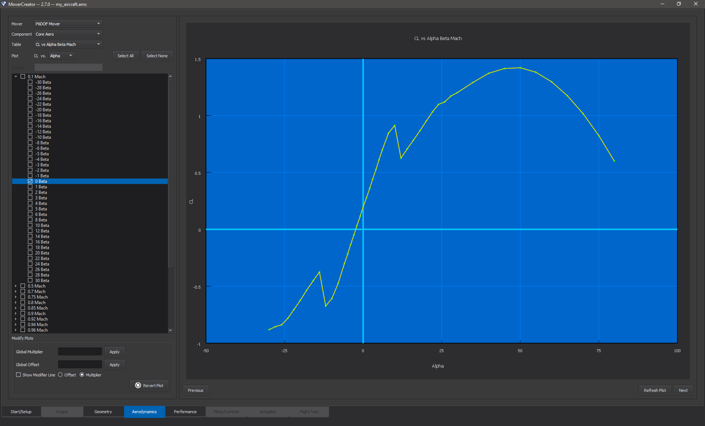
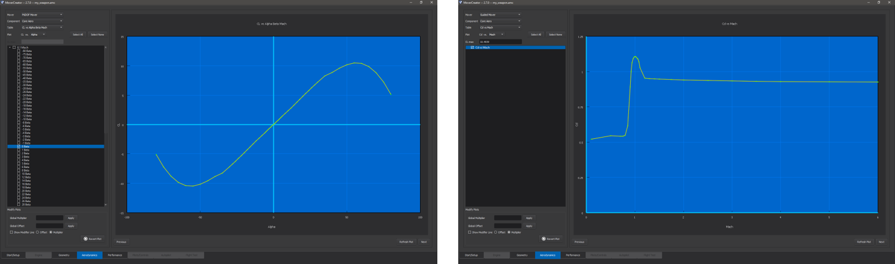
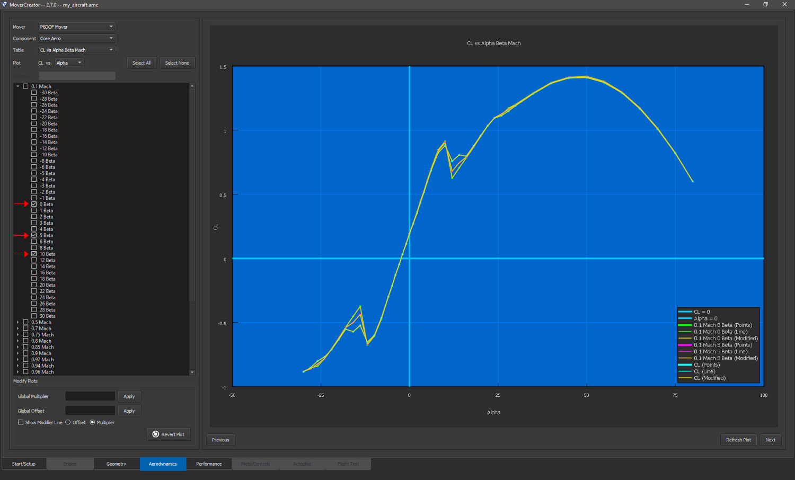
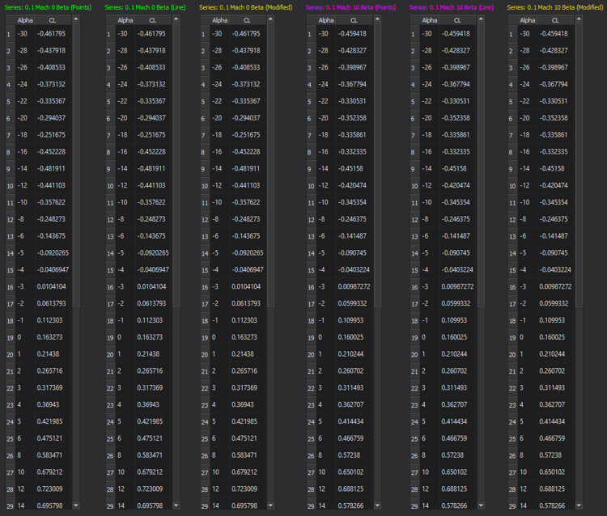
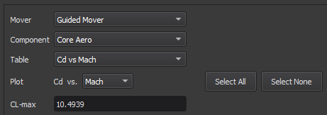
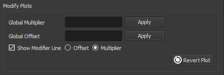

Aerodynamics¶
The aerodynamics page allows the user to define the aerodynamics of the vehicle he or she is designing. Mover Creator generates the aerodynamics for the vehicle based on the geometry defined in the Geometry page. The user can then modify the aerodynamics as they see fit. The aerodynamics defined on this page will be converted into the form of aero_data, aero_component, and/or aero blocks, recognized by AFSIM.
For information on the methods used to calculate the aerodynamics, see the Mover Creator Theory page.
When this page loads, a dialog appears like the one shown below. Load times vary and have largely to do with the range of values for Mach, angle of attack (alpha), and side-slip angle (beta) for which the aerodynamics are computed. These limits may be modified in the Geometry Page Settings, under “Aerodynamics Options”. Note that if the user is generating only a Guided Mover model, the aerodynamic calculations will take very little time, and the dialog may not even be visible.
Like the other pages in Mover Creator, this page has two main areas of interaction. The left side is where users can specify what aerodynamic plots they wish to view, and also gives them basic control over modifying the data. The right side is the plot viewing area. This area provides most of the editing authority over the plots.
Viewing Plots¶
The vehicle aerodynamics is generated for all movers selected on startup. While Mover Creator uses the same aerodynamic prediction methods for each mover type, the aerodynamics are formatted and output according to each mover’s unique requirements. The “Mover” drop-down menu will be populated with all mover types being generated. Changing the selection in this drop-down causes the page to adapt to the mover selection by only displaying the relevant information for the selected mover.
The aerodynamics plots may be divided into two main categories: core aerodynamics and movable aerodynamics. The “Component” drop-down menu allows the user to select from “Core Aero” and any available control surface (e.g. horizontal stabs, vertical tail).
The “Table” drop-down menu dictates what table is currently being viewed. For multi-dimensional tables, the “Plot” drop-down indicates the independent variable being plotted.
Checking the boxes on the left will show the corresponding series in the plot area (see image below). If a top-level check box is checked (e.g. “0.1 Mach” in the above image), all of the series under it will become checked (e.g. Beta in the image below). A plot legend may be shown by right-clicking on the plot area and selecting “Show Legend”.
The plot view may be changed to a data view by right-clicking on the plot area and selecting “Data View”. Once in the data view, the user may go back to plot view by right clicking and selecting “Plot View” from the menu. The data may also be exported to .csv by right-clicking and selecting “Export Data”. The image below shows the data view of the plot shown above.
Viewing P6DOF/RB6DOF Mover Aerodynamics¶
Each item in the “Table” menu corresponds to a table defined in the aero_data block for core aerodynamics, or aero_component for movable aerodynamics.
There are over 50 aerodynamics plots available for viewing. These tables are listed in the two tables below.
Core Aerodynamics |
|||
|---|---|---|---|
Table |
Dependent variable (y-axis) |
Independent variables (x-axis) |
aero_data equivalent |
CL vs Alpha Beta Mach |
Lift coefficient |
Angle of attack (Alpha), angle of side-slip (Beta), Mach |
|
CLq vs Alpha Beta Mach |
Derivative of lift coefficient with respect to pitch rate |
Angle of attack (Alpha), angle of side-slip (Beta), Mach |
|
CL_alphadot vs Alpha Mach |
Derivative of lift coefficient with respect to the time rate of change of angle of attack |
Angle of attack (Alpha), Mach |
|
Cd vs Alpha Beta Mach |
Drag Coefficient |
Angle of attack (Alpha), angle of side-slip (Beta), Mach |
|
CY vs Alpha Beta Mach |
Side force coefficient |
Angle of attack (Alpha), angle of side-slip (Beta), Mach |
|
CYr vs Alpha Beta Mach |
Derivative of side force coefficient with respect to yaw rate. |
Angle of attack (Alpha), angle of side-slip (Beta), Mach |
|
CY_betadot vs Beta Mach |
Derivative of side force coefficient with respect to the time rate of change of side-slip angle |
Angle of side-slip (Beta), Mach |
|
Cm vs Alpha Beta Mach |
Pitching moment coefficient. |
Angle of attack (Alpha), angle of side-slip (Beta), Mach |
|
Cmq vs Mach |
Pitch damping coefficient due to pitch rate |
Mach |
|
Cmp vs Mach |
Pitch damping coefficient due to roll rate |
Mach |
|
Cm_alphadot vs Mach |
Pitch damping coefficient due to the time rate of change of angle of attack. |
Mach |
|
Cn vs Alpha Beta Mach |
Yawing moment coefficient |
Angle of attack (Alpha), angle of side-slip (Beta), Mach |
|
Cnr vs Mach |
Yaw damping coefficient due to yaw rate |
Mach |
|
Cn_betadot vs Mach |
Yaw damping coefficient due to the time rate of change of side-slip angle |
Mach |
|
Cnp vs Mach |
Yaw damping coefficient due to pitch rate |
Mach |
|
Cl vs Alpha Beta Mach |
Rolling moment coefficient |
Angle of attack (Alpha), angle of side-slip (Beta), Mach |
|
Clp vs Mach |
Roll damping coefficient due to roll rate |
Mach |
|
Clr vs Mach |
Roll damping coefficient due to yaw rate. |
Mach |
|
Cl_betadot vs Mach |
Roll damping coefficient due to the time rate of change of side-slip angle |
Mach |
|
Clq vs Mach |
Roll damping coefficient due to pitch rate |
Mach |
|
Cl_alphadot vs Mach |
Roll damping coefficient due to the time rate of change of angle of attack |
Mach |
Movable Aerodynamics |
|||
|---|---|---|---|
Table |
Dependent variable (y-axis) |
Independent variables (x-axis) |
aero_component equivalent |
CL vs Angle Alpha Mach |
Lift Coefficient |
Control surface angle (Angle), angle of attack (Alpha), Mach |
|
Cd vs Angle Mach |
Drag coefficient |
Control surface angle (Angle), Mach |
|
CY vs Angle Beta Mach |
Side force coefficient |
Control surface angle (Angle), side-slip angle (Beta), Mach |
|
Cm vs Angle Alpha Mach |
Pitching moment coefficient |
Control surface angle (Angle), angle of attack (Alpha), Mach |
|
Cmq vs Angle Mach |
Pitch damping coefficient due to pitch rate |
Control surface angle (Angle), Mach |
|
Cn vs Angle Beta Mach |
Yawing moment coefficient |
Control surface angle (Angle), side-slip angle (Beta), Mach |
|
Cnr vs Angle Mach |
Yaw damping coefficient due to yaw rate |
Control surface angle (Angle), Mach |
|
Cl vs Angle Alpha Beta |
Rolling moment coefficient |
Control surface angle (Angle), angle of attack (Alpha), side-slip angle (Beta) |
|
Clq vs Angle Mach |
Roll damping coefficient due to pitch rate |
Control surface angle (Angle), Mach |
|
Clr vs Angle Mach |
Roll damping coefficient due to yaw rate |
Control surface angle (Angle), Mach |
|
Clp vs Angle Mach |
Roll damping coefficient due to roll rate |
Control surface angle (Angle), Mach |
Viewing PM6DOF Mover Aerodynamics¶
Each item in the “Table” menu corresponds to a table defined in the aero_data block for core aerodynamics.
PM6DOF uses far fewer tables than RB6DOF. At present, the table outputs are rough approximations, and should not be treated as accurate straight out of the box. Tables for lift, drag, and yaw force are taken directly from the P6DOF/RB6DOF calculations, with modifying factors applied to approximate the effects of trimming moments. Future efforts will use more appropriate data, with controls taken into account. The remaining tables are simply given reasonable values, and do not use P6DOF/RB6DOF data at all. Future efforts will also update these outputs to incorporate rigid-body dynamics and drag and lift device effects.
Core Aerodynamics |
|||
|---|---|---|---|
Table |
Dependent variable (y-axis) |
Independent variables (x-axis) |
aero_data equivalent |
CL (trimmed) vs Alpha Beta Mach |
Lift coefficient, trimmed for zero moment at the flight condition |
Angle of attack (Alpha), angle of side-slip (Beta), Mach |
|
Cd vs Alpha Beta Mach |
Drag Coefficient, trimmed for zero moment at the flight condition |
Angle of attack (Alpha), angle of side-slip (Beta), Mach |
|
CY vs Alpha Beta Mach |
Side force coefficient, trimmed for zero moment at the flight condition |
Angle of attack (Alpha), angle of side-slip (Beta), Mach |
|
Maximum roll acceleration vs Mach |
Maximum angular acceleration (deg/s/s), referenced at standard-day, sea-level conditions |
Mach |
|
Maximum pitch acceleration vs Mach |
Maximum angular acceleration (deg/s/s), referenced at standard-day, sea-level conditions |
Mach |
|
Maximum yaw acceleration vs Mach |
Maximum angular acceleration (deg/s/s), referenced at standard-day, sea-level conditions |
Mach |
|
Roll stabilizing frequency vs Mach |
Frequency (Hz) of the response that drives the system to equilibrium, referenced at standard-day, sea-level conditions. PM6DOF currently assumes equilibrium is reached at 0 degrees/second roll rate. |
Mach |
|
Pitch stabilizing frequency vs Mach |
Frequency (Hz) of the response that drives the system to equilibrium, referenced at standard-day, sea-level conditions. PM6DOF currently assumes equilibrium is reached at 0 degrees alpha. |
Mach |
|
Yaw stabilizing frequency vs Mach |
Frequency (Hz) of the response that drives the system to equilibrium, referenced at standard-day, sea-level conditions. PM6DOF currently assumes equilibrium is reached at 0 degrees beta. |
Mach |
|
Speedbrake Delta Cd vs Mach |
Drag coefficient change due to full speedbrake deployment |
Mach |
|
Flaps Delta CL vs Mach |
Lift coefficient change due to full flaps deployment |
Mach |
|
Flaps Delta Cd vs Mach |
Drag coefficient change due to full flaps deployment |
Mach |
|
Spoilers Delta CL vs Mach |
Lift coefficient change due to full spoiler deployment |
Mach |
|
Spoilers Delta Cd vs Mach |
Drag coefficient change due to full spoiler deployment |
Mach |
Viewing Guided Mover Aerodynamics¶
Selecting “Guided Mover” from the “Mover” menu causes the page to adapt to the lower complexity mover.
Since the Guided Mover does not model individual control surfaces, the only available item in the “Component” menu is “Core Aero”. Similarly, since the Guided Mover requires only one aerodynamic table (mach_and_cd), the only available table in the “Table” menu is “Cd vs Mach”. The Guided Mover’s maximum lift coefficient (cl_max) is computed using the same CL table as the P6DOF/RB6DOF mover. This value may be edited in the CL-max text box, if desired.
Aerodynamic Quantity |
Description |
aero command |
|---|---|---|
Cd vs Mach |
Coefficient of drag as a function of Mach, computed using the same calculations as cd_alpha_beta_mach_table |
|
Maximum Lift Coefficient |
Maximum coefficient of lift, computed using the same calculations as cL_alpha_beta_mach_table |
|
Aspect Ratio |
Aspect ratio of the vehicle. Calculated using the idealized parabolic drag polar. See aero for more details |
Editing Plots¶
Each plot that is available for viewing can also be modified by the user. A plot may be modified by using the tools in the “Modify Plots” section on the left side of the page (see image below). Users may enter a global multiplier that will multiply the y-coordinate of all points in the selected plot by the specified factor. Alternatively, users may enter a global offset that will move the y-coordinate of all points in the plot by the specified amount. Once the Apply button is clicked, a new line will appear showing the modified plot data. The modified plot line is colored yellow, and the original plot line remains its original color. Series may be modified individually or all together - only the series that are currently checked are affected by modification
If the user wishes to have more control over the shape of the plot, he or she may check the option for “Show Modifier Line”. This will cause a black horizontal line to appear, the scale for which is on the right side of the plot area (see image below). Moving the individual points on this line to different values will cause the plot data to be moved by the corresponding amount. The modifier line can be toggled between “Offset” and “Multiplier”. Additional points may be added to the modifier line by right clicking anywhere on the plot area and selecting “Add Modifier Point” from the menu. A dialog will appear prompting the user for the desired x-coordinate of the new point.
To undo changes to the plot, click “Revert Plot”, located in the lower right corner of the “Modify Plots” section. This will remove all modifications done to the current plot and restore the plot as it was originally.
Note
Editing a plot only affects the current mover. For example, editing the Cd vs Mach plot for the Guided Mover will not affect the P6DOF mover’s drag coefficient, and so on.